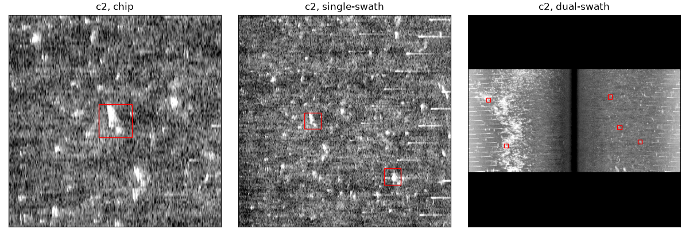
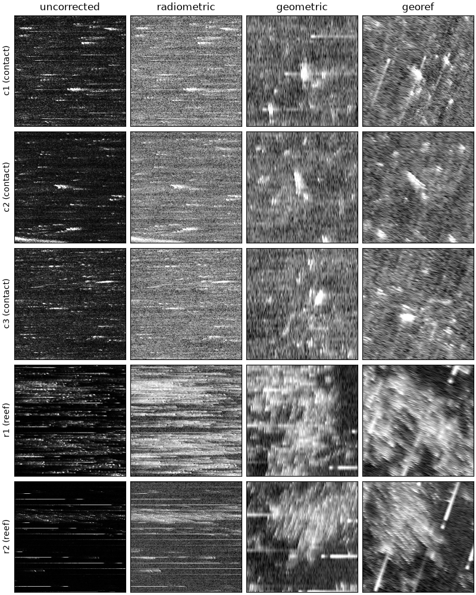
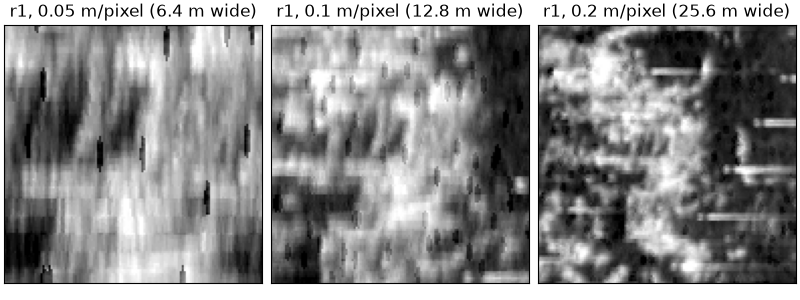

Note
Go to the end to download the full example code.
Target chips at several corrections and resolutions#

A target catalog (here five picks made by eye, a stand-in for an
acquisition-software catalog or an analyst’s list) rendered as image chips
with build_target_dataset(): at four
correction levels, at three pixel sizes, and in three window styles. Every
run also writes COCO and YOLO labels, so any of these chip sets can train
an image classifier.
The picks are illustrative: bright returns and a reef-like patch on a public USGS Klein line, not verified objects.
Data: USGS Grand Bay, U.S. public domain (see Example data).
Usage: python examples/gallery/plot_target_chips.py [output_dir]
# 2026 rshomberg@uri.edu
import json
import sys
from pathlib import Path
import matplotlib.pyplot as plt
from PIL import Image
from sidescanpy import datasets
from sidescanpy.core.target import Target
from sidescanpy.export.ml import DatasetSpec, build_target_dataset
from sidescanpy.io import read_and_convert
from sidescanpy.io.hdf5 import write_survey
from sidescanpy.log import configure_logging
from sidescanpy.processing import (
apply_tvg,
compute_geometric_ranges,
compute_georeferencing,
interpolate_aux_onto_pings,
)
from sidescanpy.targets import write_targets_json
out = Path(sys.argv[1]) if len(sys.argv) > 1 else Path(".")
out.mkdir(parents=True, exist_ok=True)
configure_logging("WARNING")
Convert and correct one line, and save it: the chip builder reads
.ss.h5 files, so one catalog can span many lines.
Navigation in this file is sample-and-hold, and each GPS update is logged
over two entries (the jump, then a tiny follow-up one entry later).
merge_window_s joins the two into one update; without it every
update becomes two fixes 65 ms apart and the interpolated track stalls
for one ping in seven. aux_update_events()
shows the pattern (changes 1 entry apart, then 6 to 7).
survey = read_and_convert([datasets.fetch("usgs_grand_bay_150602205800.xtf")], fmt="xtf")
survey = interpolate_aux_onto_pings(survey, merge_window_s=0.3)
survey = apply_tvg(survey)
survey = compute_geometric_ranges(survey)
survey = compute_georeferencing(survey)
ss_dir = out / "ss_h5"
ss_dir.mkdir(exist_ok=True)
write_survey(survey, ss_dir / "grand_bay_150602205800.ss.h5", overwrite=True)
23:34:45 WARNING sidescanpy.processing.aux_fixes: held_value_fixes ['heading_deg']: 4 update events combine more than 5 changes; the stream may update faster than merge_window_s=0.3 s
23:34:45 WARNING sidescanpy.processing.aux_fixes: held_value_fixes ['heading_deg']: 4 update events combine more than 5 changes; the stream may update faster than merge_window_s=0.3 s
23:34:45 WARNING sidescanpy.processing.aux_fixes: held_value_fixes ['pitch_deg']: 4 update events combine more than 5 changes; the stream may update faster than merge_window_s=0.3 s
23:34:45 WARNING sidescanpy.processing.aux_fixes: held_value_fixes ['roll_deg']: 2 update events combine more than 5 changes; the stream may update faster than merge_window_s=0.3 s
The catalog. Each target has a position, the side (0 port, 1 starboard),
the ping and sample where it was picked, a class, and how far its
position can be trusted: only "verified" targets are rendered by
default. A catalog from acquisition software is read into the same
Target records
(sidescanpy.io.read_target_catalog()), and
write_targets_json() keeps it as a plain file.
picks = [ # target_id, category, latitude, longitude, side, sample, ping
("c1", "contact", 30.3642369, -88.3602696, 1, 2523, 85),
("c2", "contact", 30.3640208, -88.3602611, 1, 1736, 127),
("c3", "contact", 30.3638172, -88.3604494, 1, 1376, 217),
("r1", "reef", 30.3632802, -88.3595788, 0, 2621, 73),
("r2", "reef", 30.3628830, -88.3599460, 0, 3317, 208),
]
catalog = [
Target(tid, "manual", "picked by eye", latitude=lat, longitude=lon, channel=side,
sample=sample, ping=ping, category=cat, position_confidence="verified")
for tid, cat, lat, lon, side, sample, ping in picks
]
write_targets_json(catalog, out / "targets.json")
One chip per target at each correction level. uncorrected and
radiometric (after TVG) are cut from the native ping x sample grid,
slant range across, so a target looks stretched sideways (samples are
much closer together than pings). geometric resamples onto ground
range and along-track meters at 0.05 m per pixel with scipy’s
griddata (the default), and georef onto a north-up map grid.
Pings here are about 0.33 m apart and samples 0.024 m, so across track
the chip keeps detail and along track it interpolates between pings:
no resampling adds along-track resolution. The short black ticks are
dropout samples in the recording.
levels = ["uncorrected", "radiometric", "geometric", "georef"]
for level in levels:
spec = DatasetSpec(styles=("chip",), render_level=level, size_px=256,
resolution_m=0.05 if level in ("geometric", "georef") else None,
categories=["contact", "reef"])
result = build_target_dataset(ss_dir, catalog, spec, out / level)
print(f"{level:12s} {result.styles['chip'].n_target_images} chips, "
f"{len(result.skipped)} skipped")
fig, axes = plt.subplots(len(catalog), len(levels), figsize=(8, 10), constrained_layout=True)
for row, target in enumerate(catalog):
for col, level in enumerate(levels):
ax = axes[row, col]
ax.imshow(Image.open(out / level / "chip" / f"target_{target.target_id}.png"), cmap="gray")
ax.set_xticks([])
ax.set_yticks([])
if row == 0:
ax.set_title(level)
if col == 0:
ax.set_ylabel(f"{target.target_id} ({target.category})")
fig.savefig(out / "target_chips_levels.png", dpi=150)

uncorrected 5 chips, 0 skipped
radiometric 5 chips, 0 skipped
geometric 5 chips, 0 skipped
georef 5 chips, 0 skipped
The same targets at three pixel sizes. A list of resolutions builds one
dataset per size, under res_<m>m/.
spec = DatasetSpec(styles=("chip",), render_level="geometric", size_px=256,
resolution_m=[0.025, 0.05, 0.1], categories=["contact", "reef"])
build_target_dataset(ss_dir, catalog, spec, out / "resolutions")
fig, axes = plt.subplots(1, 3, figsize=(8, 3), constrained_layout=True)
for ax, res in zip(axes, ["0.025", "0.05", "0.1"]):
ax.imshow(Image.open(out / "resolutions" / f"res_{res}m" / "chip" / "target_r1.png"), cmap="gray")
ax.set_title(f"r1, {res} m/pixel ({float(res) * 256:g} m wide)")
ax.set_xticks([])
ax.set_yticks([])
fig.savefig(out / "target_chips_resolutions.png", dpi=150)

Window styles: a square chip around the target; the single-swath
strip of its side, which keeps the context of neighbouring targets (here
c3 below c2); and the dual-swath view of both sides with nadir in the
middle. The red boxes are the annotations written to
targets.coco.json and the YOLO labels; box_size_m sets their size
for targets with no measured extent. A fixed resolution_m applies to
every style, so the dual-swath view, which must fit the whole swath
(about 200 m here), is built separately with the resolution left to the
builder. The line is shorter than that window, hence the black bands
above and below.
common = dict(render_level="geometric", box_size_m=4.0, categories=["contact", "reef"])
build_target_dataset(ss_dir, catalog, DatasetSpec(styles=("chip", "single-swath"), size_px=256,
swath_size_px=512, resolution_m=0.1, **common),
out / "styles")
build_target_dataset(ss_dir, catalog, DatasetSpec(styles=("dual-swath",), swath_size_px=512, **common),
out / "styles")
fig, axes = plt.subplots(1, 3, figsize=(12, 4), constrained_layout=True)
for ax, style in zip(axes, ["chip", "single-swath", "dual-swath"]):
ax.imshow(Image.open(out / "styles" / style / "target_c2.png"), cmap="gray")
coco = json.loads((out / "styles" / style / "targets.coco.json").read_text())
[image] = [im for im in coco["images"] if im["file_name"].endswith("target_c2.png")]
for ann in coco["annotations"]:
if ann["image_id"] == image["id"]:
x, y, w, h = ann["bbox"]
ax.add_patch(plt.Rectangle((x, y), w, h, fill=False, edgecolor="red"))
ax.set_title(f"c2, {style}")
ax.set_xticks([])
ax.set_yticks([])
fig.savefig(out / "target_chips_styles.png", dpi=150)
print(sorted(p.relative_to(out).as_posix() for p in (out / "styles").glob("*/targets.coco.json")))
['styles/chip/targets.coco.json', 'styles/dual-swath/targets.coco.json', 'styles/single-swath/targets.coco.json']
Total running time of the script: (1 minutes 12.902 seconds)